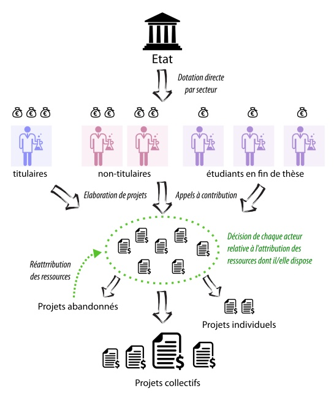

Récemment, un groupe de chercheurs français a publié une tribune dans Le Monde annonçant leur intention de candidater collectivement à la présidence de l’HCERES, la plus haute instance publique de régulation et d’orientation de la recherche en France. Très lue et commentée dans les milieux académiques, cette initiative portée notamment par rogueESR a reçu plus de 5000 soutiens, dont le mien.
Responsable de l’évaluation de tous les laboratoires de l’Hexagone, l’HCERES et son ainée l’AERES ont accompagné — et souvent encouragé — les transformations du paysage scientifique français depuis 2006. En effet, ce “Haut Comité de l’évaluation de la recherche et de l’enseignement supérieur” est historiquement lié à la création de l’ANR (Agence nationale de la recherche) qui a fait basculer en 2005 la recherche française vers un système de financement “par projet” à l’anglo-saxonne.
Un système en proie aux critiques depuis 15 ans
Cette profonde réforme structurelle a fait couler beaucoup d’encre et de sueur depuis 15 ans. En effet, elle implique que les chercheurs dédient une grande partie de leur temps à rédiger des demandes de financement n’ayant que peu de chances d’aboutir. Malgré une légère amélioration depuis 2015, le taux de succès stagne aux alentours de 15% et nombreux sont ceux qui souscrivent à l’analyse selon laquelle le temps perdu à écrire et à évaluer ces demandes de financements serait largement contre-productif, aussi bien au plan scientifique qu’au plan économique, compte tenu des énormes frais de fonctionnement de l’ANR elle-même.
A cet égard, la tribune parue dans Le Monde en ce début d’année 2020 n’est que la dernière en date d’une longue série (voir ici, ici, ici, ici, ou là). Aura-t-elle autant d’impact que la démission massive d’importantes figures de l’ANR en 2016 qui, refusant de composer avec des coupes budgétaires ininterrompues sous Sarkozy puis Hollande, ont peut-être contribué à faire remonter le budget global dédié à la structure?
Rien n’est moins sûr, si l’on se fie à la manière dont l’exécutif actuel traite les revendications qui viennent “d’en bas” et si l’on prend en compte que le candidat pressenti pour la présidence de l’HCERES n’est autre que Thierry Coulhon, ex-conseiller du gouvernement Fillon dorénavant au chevet d’Emmanuel Macron comme conseiller “éducation, enseignement supérieur, recherche et innovation”.
Ceci étant, l’intérêt inédit de cette tribune réside paradoxalement dans le rappel d’un fait très simple mais trop souvent oublié: en matière d’évaluation de la recherche, “l’en bas” est en fait “l’en haut” puisque nul ne saurait mieux évaluer la production scientifique que les chercheurs eux-mêmes. Ce sont eux, et non pas les ministres ou le Président, qui sont les mieux à mêmes de pressentir les révolutions à venir, de déterminer quelles lignes de recherches sont dans l’impasse et lesquelles se révèleront prometteuses, ou encore d’évaluer les ressources matérielles et humaines requises pour atteindre les objectifs fixés.
C’est avec cette idée en tête que les membres du collectif rogueESR incitent toute la communauté scientifique à s’emparer de la question dans leur dernière lettre:
La seconde phase de ce mouvement naissant de réaffirmation du monde savant comme formant une collectivité seule à même de se doter de ses propres règles, cette immense liberté étant compensée par un principe de responsabilité vis-à-vis de la société, nécessite la participation de tous. Par quelle stratégie pouvons nous, en jugulant toute forme de bureaucratie, convenir, par delà les clivages partisans, de l’Université et du système de recherche que nous aspirons à faire vivre. Notre mail est ouvert à toutes les propositions tactiques et stratégiques réfléchies.
Je prends donc la balle au bond pour soumettre une proposition en rupture aussi complète avec le système actuel qu’avec le précédent. Face à l’échec programmé de l’ANR, il peut être tentant de contempler avec nostalgie le passé et ses “financements interministériels” à la fois moins chronophages et plus flexibles pour les chercheurs, mais ce serait à mon sens une grave erreur.
En effet, si l’on peut considérer que les réformes qui ont fait naître l’ANR furent l’occasion pour le gouvernement alors en place de tenir un “discours de modernisation” cachant — tel un écran de fumée — les coupes budgétaires à venir, ces réformes s’appuyaient tout de même sur un vif mécontentement à l’égard de l’ancien système. Il est à ce titre instructif de relire le rapport sur la recherche étudié à l’Assemblée Nationale le 21 décembre 2004. De nombreuses critiques visaient alors l’allocation trop pyramidale des crédits (suivant un schéma ministère - institut - laboratoire - chercheur) et dont le grand défaut était d’alimenter les népotismes locaux en laissant les directeurs de laboratoire libres de répartir les ressources selon leur gré ; et souvent au détriment des projets les plus innovants ou les plus risqués portés par des chercheurs plus jeunes et encore mal insérés dans les jeux de pouvoirs complexes que le monde académique a toujours connu. Le passage à un financement par projet a au moins eu cette vertu de désenclaver tous les chercheurs et d’instaurer une compétition horizontale permettant en théorie à chacun de concourir directement pour l’obtention des ressources.
Une proposition hors-cadre
Est-il possible de combiner la flexibilité de l’ancien système avec l’horizontalité du nouveau, tout en faisant un vrai pas vers une science plus libre, plus créative et dont la gestion impliquerait la “participation de tous”? Il me semble que oui.
L’idée est la suivante: au lieu d’attribuer les financements par projet ou par laboratoire, l’État pourrait directement attribuer une partie de ses crédits à chaque acteur de la recherche, selon un système mêlant mérite scientifique et ancienneté. De l’étudiant en fin de thèse jusqu’au directeur de recherche hors-classe, en passant par l’ingénieur d’étude et le post-doctorant, chaque personne contribuant à faire avancer le savoir contrôlerait ainsi une fraction des crédits disponibles pour sa branche.
A chaque échelon hiérarchique, la dotation augmenterait sensiblement, de manière à refléter malgré tout l’évolution de l’expertise scientifique. Dans le domaine des neurosciences cognitives par exemple, l’État pourrait attribuer cinq mille euros par an pour les doctorants en fin de thèse, vingt mille euros pour les chercheurs non-titulaires (i.e les post-docs), et cinquante mille euros pour les chercheurs et ingénieurs de recherche titulaires. Si cette idée peut paraître subversive vis-à-vis de l’organisation hiérarchique classique, ce n’est pas un hasard. En réalité, il s’agit simplement de pousser la logique de rogueESR jusqu’au bout.
Si les chercheurs sont amenés à évaluer et à contrôler collectivement la recherche, n’est-il pas naturel d’assigner à chacun d’entre eux une partie des ressources disponibles, à employer selon leurs expertises et leurs motivations? Puisqu’il est commun de considérer qu’un étudiant en fin de thèse est déjà devenu expert vis-à-vis de son thème de recherche, et qu’il est fréquent d’observer des post-doctorants se comporter en véritables locomotives académiques, n’est-il pas sensé d’inclure ces deux catégories dans le système d’évaluation et de contrôle collectif dont il est question?
Une objection naturelle est que cette organisation semble à première vue hautement individualiste, chaque chercheur disposant alors de son petit lopin de terre pour cultiver ses intérêts particuliers. Cependant, il faut remarquer que le financement par projet tel que nous le connaissons est déjà hautement individualiste puisque les financements sont associés à une seule personne plutôt qu’à un collectif, aussi bien à l’échelle française qu’à l’échelle européenne. De plus, dans ce nouveau système, personne n’aurait la “force de frappe” nécessaire pour mener à bien de grands projets, de sorte que la collaboration et la mise en commun des ressources s’imposera à quiconque ayant de grandes ambitions scientifiques.
En mettant en place une plate-forme permettant à la fois le dépôt de projets, l’appel à contributions et l’attribution des ressources, chaque acteur pourrait alors organiser une levée de fond auprès de ses pairs, moyennant une place d’auteur et/ou un droit de regard proportionnel sur les publications résultant de cette mise en commun. L’État pourrait favoriser ce type de logique coopérative en attribuant des financements supplémentaires aux projets ayant reçus suffisamment de contributions, rompant ainsi avec le principe du jeu à somme nulle.
La lutte contre le «branding» académique et le règne des chercheurs-communicants
La grande vertu de ce système serait de mettre chaque chercheur face au dilemme suivant: travailler seul avec des moyens limités ou travailler collectivement avec des moyens bien plus importants, de sorte que les ambitions personnelles se trouveraient systématiquement mises en balance avec les ambitions scientifiques ; et ce, contrairement au système actuel où la construction d’une réputation et d’une marque de fabrique personnelle (“academic branding”) conditionne très largement la capacité à assouvir nos ambitions scientifiques, au bénéfice des chercheurs les plus doués pour la communication.
Une telle initiative démultiplierait sans doute l’inventivité des chercheurs à chaque échelon et permettrait également de tirer un meilleur parti des différences inter-individuelles qui existent dans le monde académique. Par exemple, dans le domaine des neurosciences comme dans bien d’autres, les «théoriciens» n’ont généralement pas besoin de beaucoup de ressources propres pour effectuer leur travail. Quelques bons ordinateurs suffisent. En revanche, ils ont cruellement besoin de pouvoir s’appuyer sur des travaux informant et contraignant les théories qu’ils élaborent. Dans un tel système, ces mêmes théoriciens pourraient ainsi mettre leurs crédits à disposition des «expérimentalistes» ayant déposé les projets les plus utiles à leur yeux, ou bien émettre directement un appel à contribution pour les expériences dont ils ont le plus besoin.

Certes, une telle réforme ne pourra pas être imposée à la communauté scientifique du jour au lendemain, et il faudrait sans doute des années d’expérimentation locale pour développer les outils nécessaires et peaufiner les aspects logistiques et éthiques de ce système participatif entièrement “bottom-up”, pour reprendre un anglicisme dont les scientifiques sont friands.
Mais si l’on veut responsabiliser tous les chercheurs vis-à-vis de l’avenir de la recherche, et si l’on veut que tous interviennent dans l’évaluation de cette dernière, si l’on veut lutter à la fois contre l’arbitraire bureaucratique et l’arbitraire hiérarchique, il faudra bien leur donner la contrepartie de cette responsabilité nouvelle: le contrôle sur les ressources disponibles. Sans cela, un système procédant par nomination de représentants dépositaires du contrôle, de l’évaluation et de la répartition des ressources paraît inévitable, qu’il s’agisse de directeurs de laboratoire ou de bureaucrates employés par des institutions centrales comme l’ANR.
Pour se passer de tels représentants et pour libérer les forces vives du monde académique tout en prônant l’autogestion, il est essentiel que chacun contribue à ce travail d’évaluation, d’orientation et de mise en commun.
Pour aller plus loin
Dans le cadre de ce mouvement collectif, deux séances publiques du séminaires “Politiques des Sciences”’ se tiendront à l’EHESS le 30 janvier et le 6 février prochain. Ces rencontres seront sans aucun doute l’occasion de discuter de nombreuses autres propositions imaginées par les chercheurs pour refonder le système tel que nous le connaissons.
Voir le programme, ici.